3. Geometric Brownian Motion#
The purpose of this notebook is to review and illustrate the Geometric Brownian motion and some of its main properties.
Before diving into the theory, let’s start by loading the following libraries
matplotlib
together with the style sheet Quant-Pastel Light.
These tools will help us to make insightful visualisations of Bessel processes.
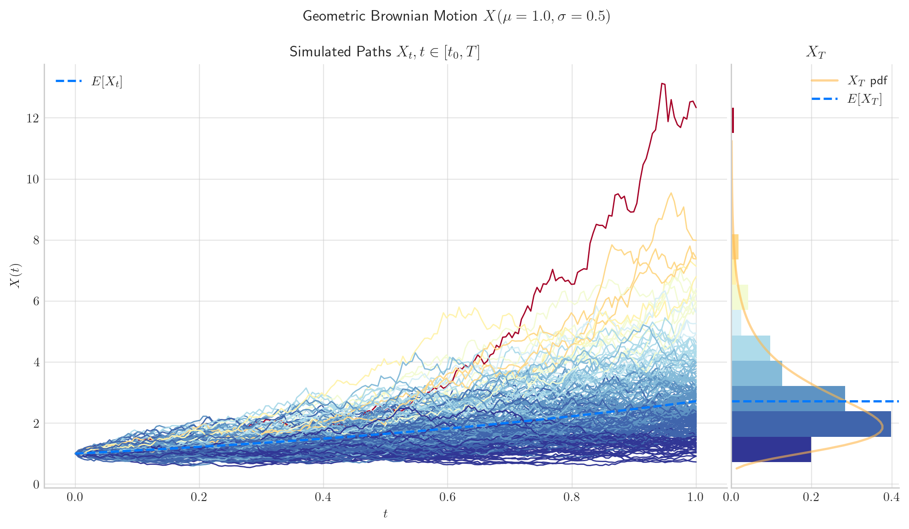
3.1. Definition#
The Geometric Brownian motion can be defined by the following Stochastic Differential Equation (SDE)
with initial condition \(X_0 =x_0>0\), and constant parameters \(\mu\in \mathbb{R}\), \(\sigma>0\). Here, \(W_t\) denotes a standard Brownian motion.
In order to find its solution, let us set \(Y_t = \ln(X_t)\). Then, Ito’s formula implies
or equivalently
From this expression, we obtain
Note
📝 The last expression implies that the process takes only positive values.
3.2. Marginal Distributions#
Equation (3.2) implies that for each \(t>0\), the variable \(\ln (X_t)|X_0\), which will be denoted simply by \(\ln(X_t)\), follows a normal distribution –since it can be expressed as a scaled marginal of the Brownian motion plus a deterministic part.
Moreover, using the properties of the Brownian Motion we can calculate its expectation and variance, namely
and
That is,
and consequently \(X_t\) follows a log-normal distribution.
3.2.1. Expectation and Variance#
and
To calculate the expectation of \(X_t\), we are going to use the fact that the process \(M_t = \exp \{ \sigma W_t - \dfrac{1}{2}\sigma^2 t\}\) is an exponential martingale. Then
Similarly, for the variance we will use the fact that the process \(M_t = \exp \left\{ 2\sigma W_t - 2\sigma^2 t \right\}\) is an exponential martingale. Then
Hence
So, for given \(x_0, \mu, \sigma,\) and \(t\), we can calculate both the expectation and the variance of \(X_t|X_0\) using these formulas.
import numpy as np
x0 = 1.0
mu = 0.1
sigma = 0.2
t= 10
print(f'For x_0={x0}' , f'mu={mu}', f'sigma=.{sigma}', f't={t}', sep=", ")
print(f'E[X_t]={(x0*np.exp(mu*t)):.2f}', f'Var[S_t]={(x0**2)*np.exp(2*mu*t)*(np.exp(t*sigma**2)-1) :.2f}', sep="\n")
For x_0=1.0, mu=0.1, sigma=.0.2, t=10
E[X_t]=2.72
Var[S_t]=3.63
3.2.2. Marginal Distributions in Python#
Knowing the distribution –with its corresponding parameters– of the marginal distributions allows us to reproduce them with Python.
One way to do this is by using the object lognorm from the library scipy.stats. The next cell shows how to create \(X_1\) using this method.
from scipy.stats import lognorm
import numpy as np
mu = 1.0
sigma = 0.5
t =1.0
x0 = 1.0
X_1 = lognorm(s=sigma*np.sqrt(t), scale=np.exp(np.log(x0) + (mu - 0.5*sigma**2)*t))
print(X_1.mean())
print(X_1.var())
2.7182818284590455
2.098679737427875
Another way is by creating an object GBM from aleatory.processes and calling the method get_marginal on it. The next cell shows how to create the marginal \(X_1\) using this method.
from aleatory.processes import GBM
mu = 1.0
sigma = 0.5
t = 1.0
x0 = 1.0
process = GBM(drift=mu, volatility=sigma, initial=x0)
X_1 = process.get_marginal(t=1)
print(X_1.mean())
print(X_1.var())
2.7182818284590455
2.098679737427875
Hereafter, we will use the latter method to create marginal distributions from the Geometric Brownian Motion.
3.2.3. Probability Density Functions#
The probability density function of the marginal distribution \(X_t\) is given by the following expression
3.2.3.1. Visualisation#
Let’s consider a process GBM(drift=1.0, volatility=0.5, initial=1.0) and plot the density function of \(X_1\).
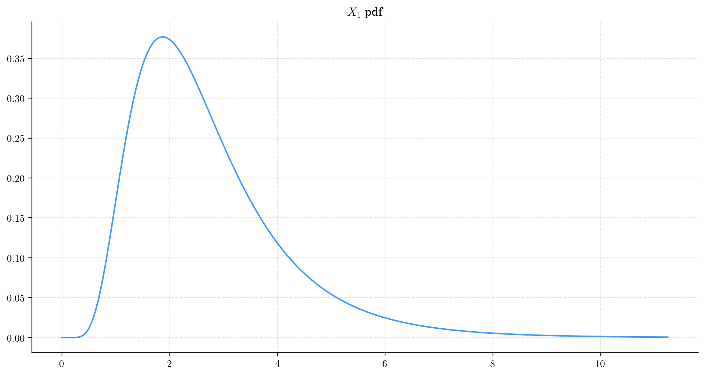
Next, we vary the value of the parameter \(\mu\) and plot the corresponding pdfs. As \(\mu\) increases the density becomes wider and the shape changes as well. This reflects the fact that both the mean and the variance are increasing.
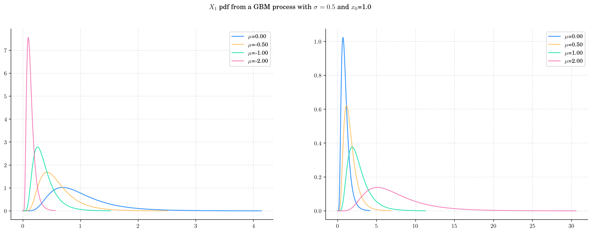
Now we keep \(\mu\) fixed and vary \(\sigma\). Once again, both the mean and the variance grow with \(\sigma\). Note that the variance grows at a very rapid rate, causing the density to be very wide.
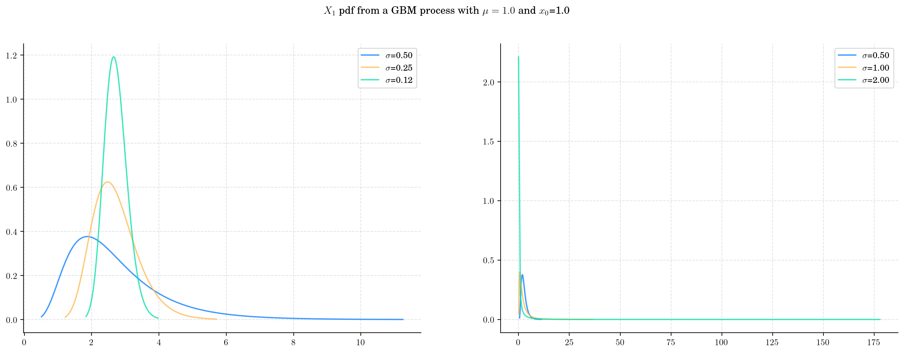
Finally, let’s fix both parameters and plot the densities \(X_t\) as \(t\) grows, i.e. as the process evolves in time.
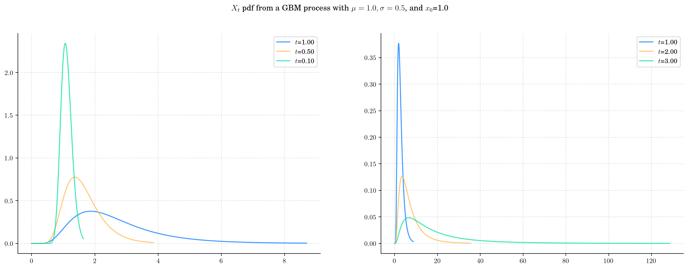
3.2.4. Sampling#
Now, let’s see how to get a random sample from \(X_t\) for any \(t>0\).
The next cell shows how to get a sample of size 5 from \(X_1\).
from aleatory.processes import GBM
process = GBM(drift=1.0, volatility=0.5, initial=1.0)
X_1= process.get_marginal(t=1.0)
X_1.rvs(size=5)
array([2.77862739, 2.3905898 , 3.29412499, 1.38006845, 1.48137326])
Similarly, we can get a sample from \(X_{10}\)
X_10 = process.get_marginal(t=10)
X_10.rvs(size=5)
array([ 1309.40642296, 158186.03695715, 12088.0680654 , 2928.29281815,
74910.80766979])
3.3. Simulation#
In order to simulate paths from a stochastic process, we need to set a discrete partition over an interval for the simulation to take place.
For simplicity, we are going to consider an equidistant partition of size \(n\) over \([0,T]\), i.e.:
Then, the goal is to simulate a path of the form \(\{ X_{t_i} , i=0,\cdots, n-1\}\).
There are a number of ways to do this. Here, we are going to use equation (3.3), i.e.
and the fact that we know how to simulate a Brownian Motion (see Brownian Motion for details).
# Snippet to Simulate a Geometric Brownian Path
from aleatory.processes import BrownianMotion
import numpy as np
T = 1.0
n = 100
x0 = 1.0
mu = 1.0
sigma = 0.25
t = 1.0
times = np.linspace(0, T, n) # Partition
BM = BrownianMotion(T=T) # Brownian Motion
bm_path = BM.sample_at(times) # Simulated path from BM
gbm_path = x0*np.exp((mu - 0.5*sigma**2)*times + sigma*bm_path) # Simulated path from GBM
Let’s plot our simulated path!
plt.plot(times, gbm_path, 'o-', lw=1)
plt.title('Geometric Brownian Motion Path')
plt.show()
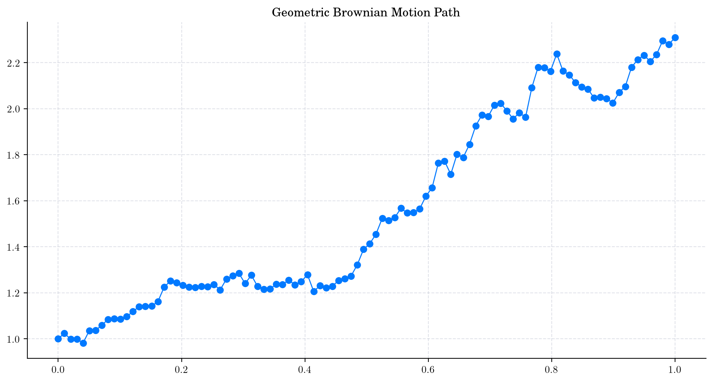
Note
In this plot, we are using a linear interpolation to draw the lines between the simulated points.
3.3.1. Simulating and Visualising Paths#
To simulate several paths from a GBM and visualise them we can use the method plot from the aleatory library.
Let’s simulate 10 paths over the interval \([0,1]\) using a partition of 100 points.
Tip
Remember that the number of points in the partition is defined by the parameter \(n\), while the number of paths is determined by \(N\).
from aleatory.processes import GBM
process = GBM(drift=mu, volatility=sigma, initial=x0, T=1.0)
process.plot(n=100, N=10)
plt.show()
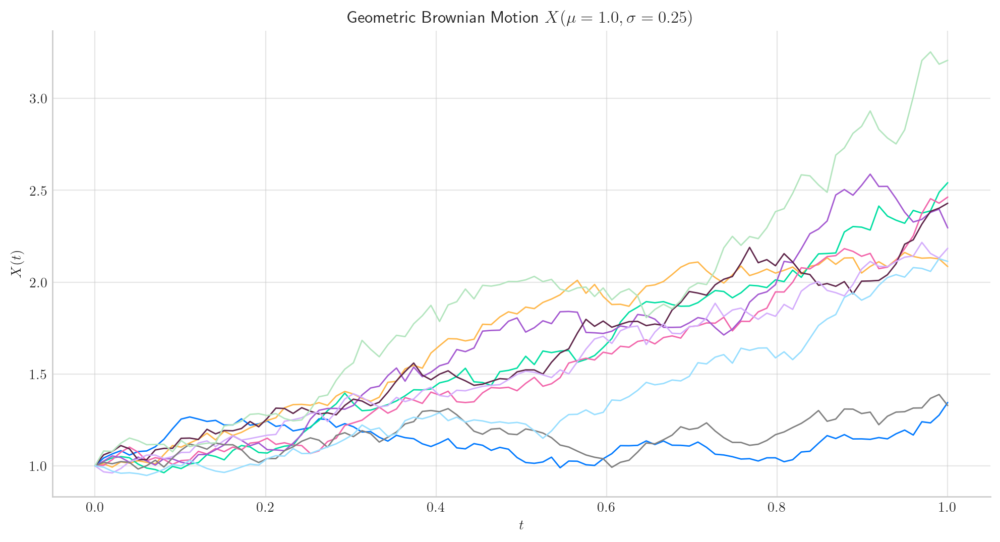
Similarly, we can define the GBM over the interval \([0, 5]\) and simulate 50 paths with a partition of size 100.
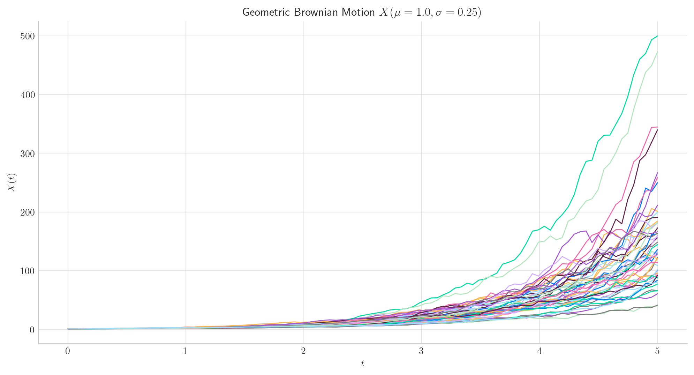
3.4. Long Time Behaviour#
3.4.1. Expectation and Variance#
Note that when \(t\) goes to infinity, we have
and
3.4.1.1. Case 1. GBM with \(\mu>0\) and \(2\mu + \sigma^2>0\).#
draw_mean_variance(x0= 1.0, mu=0.5, sigma=0.25, T=50)
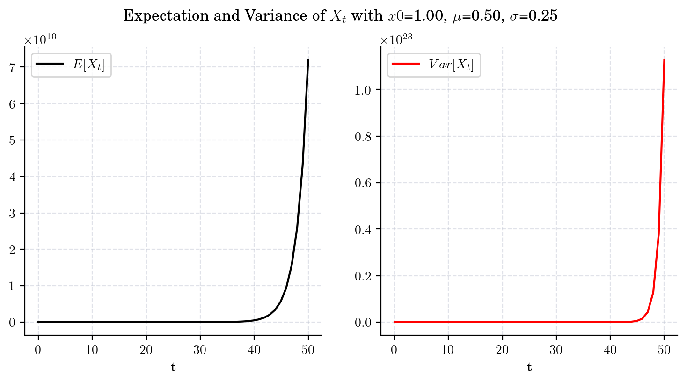
3.4.1.2. Case 2. GBM with \(\mu<0\) and \(2\mu + \sigma^2>0\).#
draw_mean_variance(x0=1.0, mu=-1.0, sigma=0.2, T=50)
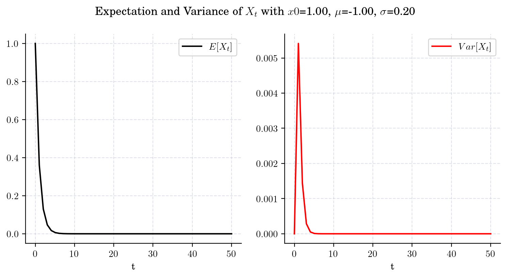
3.4.1.3. Case 3. GBM with \(\mu<0\) and \(2\mu + \sigma^2=0\).#
draw_mean_variance(x0=1.0, mu=-(0.2**2)/2, sigma=0.2, T=200)
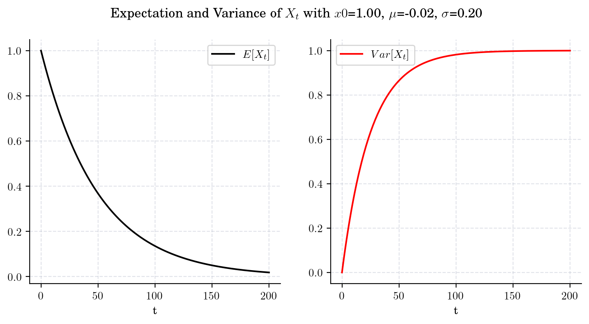
3.4.1.4. Case 4. GBM with \(\mu<0\) and \(2\mu + \sigma^2 < 0\).#
draw_mean_variance(x0=1.0, mu=-0.1, sigma=0.2, T=50)
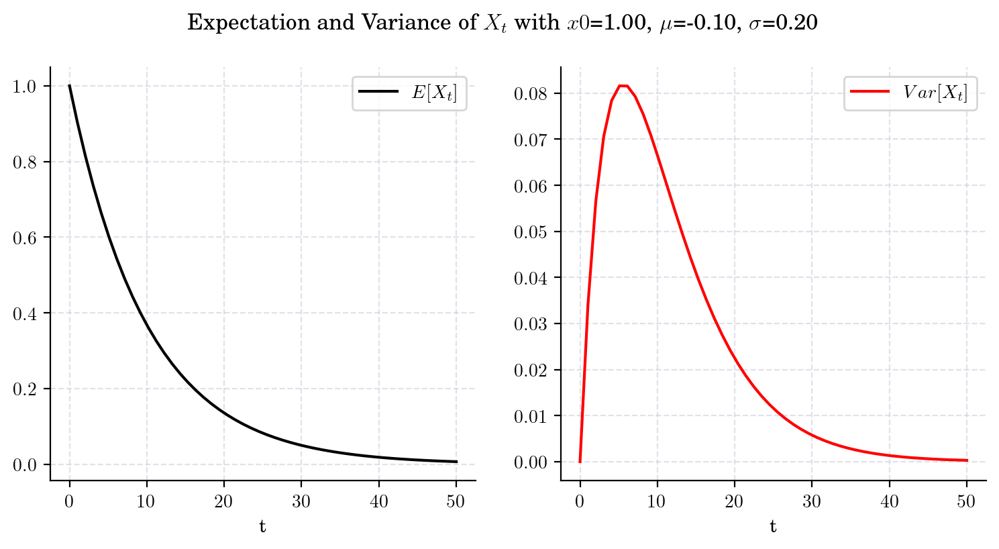
3.4.1.5. Case 5. GBM with \(\mu =0 \)#
draw_mean_variance(x0=1.0, mu=0.0, sigma=0.2, T=100)
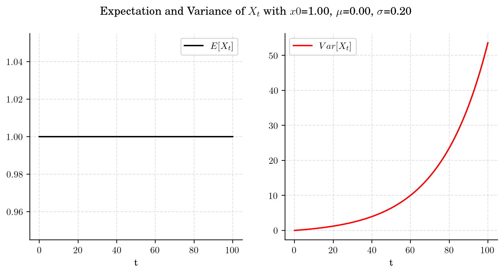
3.4.2. Marginal#
If \( \mu>\frac{1}{2}\sigma^2\), then \(X_t\rightarrow\infty\) in probability as \(t\rightarrow\infty\).
If \( \mu<\frac{1}{2}\sigma^2\), then \(X_t\rightarrow 0\) in probability as \(t\rightarrow\infty\).
If \( \mu = \frac{1}{2}\sigma^2\), then \(X_t\) has no limit in probability as \(t\rightarrow\infty\).
3.4.2.1. Case 1#
If \(\mu > \frac{1}{2}\sigma^2\), then \(X_t\rightarrow\infty\) in probability as \(t\rightarrow\infty\).
process = GBM(drift=0.5, volatility=0.25, initial=1.0, T=10.0)
process.draw(n=100, N=100)
plt.show()
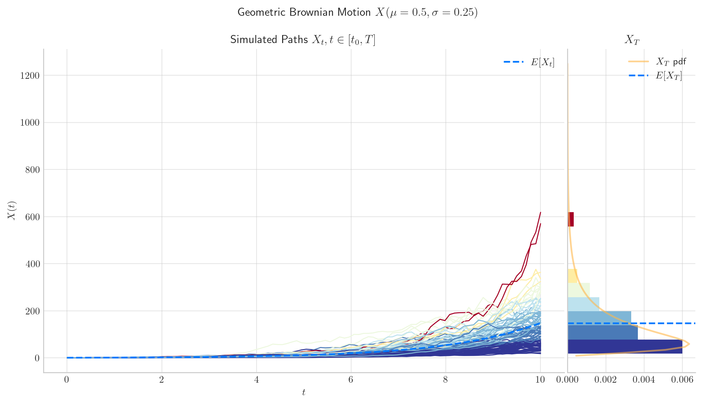
3.4.2.2. Case 2#
If \( \mu<\frac{1}{2}\sigma^2\), then \(X_t\rightarrow 0\) in probability as \(t\rightarrow\infty\).
process = GBM(drift=0.02, volatility=0.25, initial=1.0, T=20.0) # mu =(1/2)sigma**2
process.draw(n=100, N=100)
plt.show()
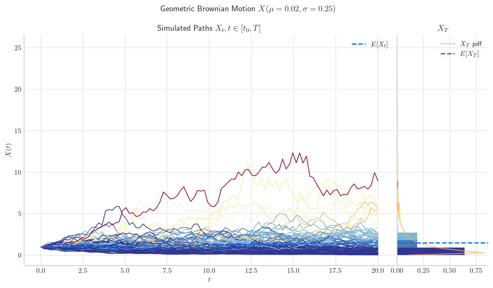
3.4.2.3. Case 3#
If \( \mu = \frac{1}{2}\sigma^2\), then \(X_t\) has no limit in probability as \(t\rightarrow\infty\).
process = GBM(drift= 0.5*0.25**2 , volatility=0.25, initial=1.0, T=20.0) # mu = (1/2)sigma**2
process.draw(n=100, N=100)
plt.show()
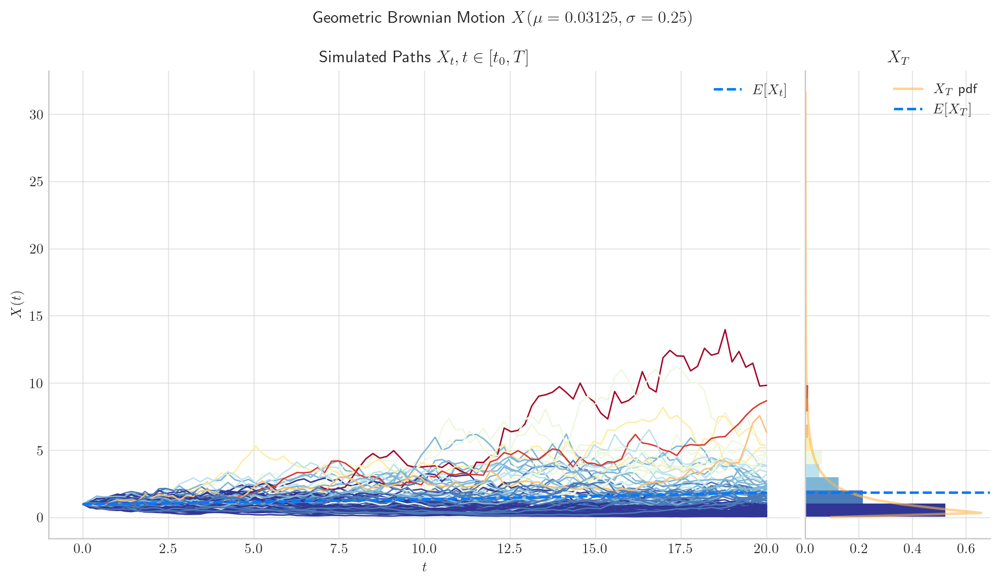
3.5. Visualisation#
To finish this note, let’s take a final look at a simulation from the Geometric Brownian Motion.
from aleatory.processes import GBM
process = GBM(drift=0.5, volatility=0.25, initial=1.0, T=5.0)
process.draw(n=200, N=200, envelope=True)
plt.show()
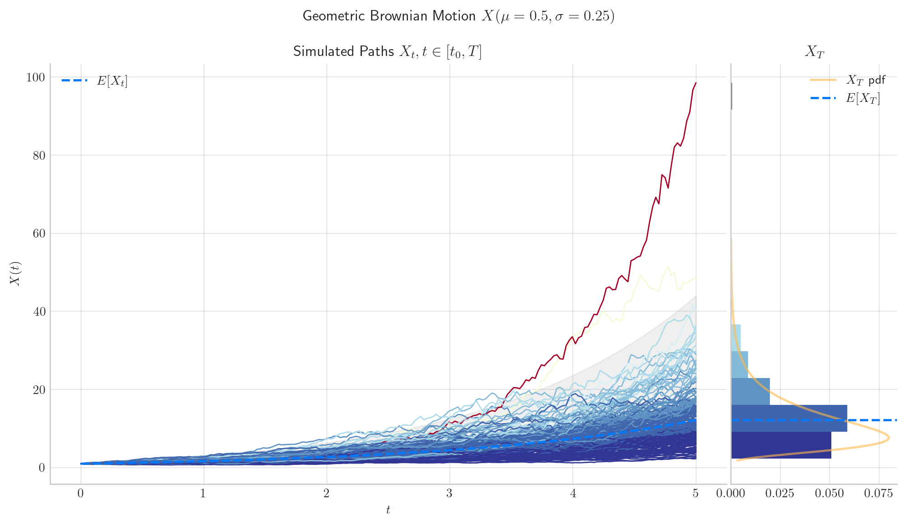
3.6. References and Further Reading#
The Pricing of Options and Corporate Liabilities (1973) by Fischer Black and Myron Scholes.